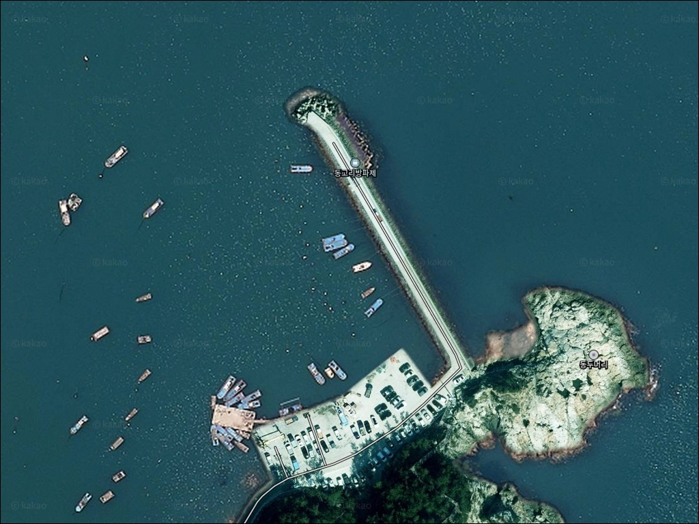
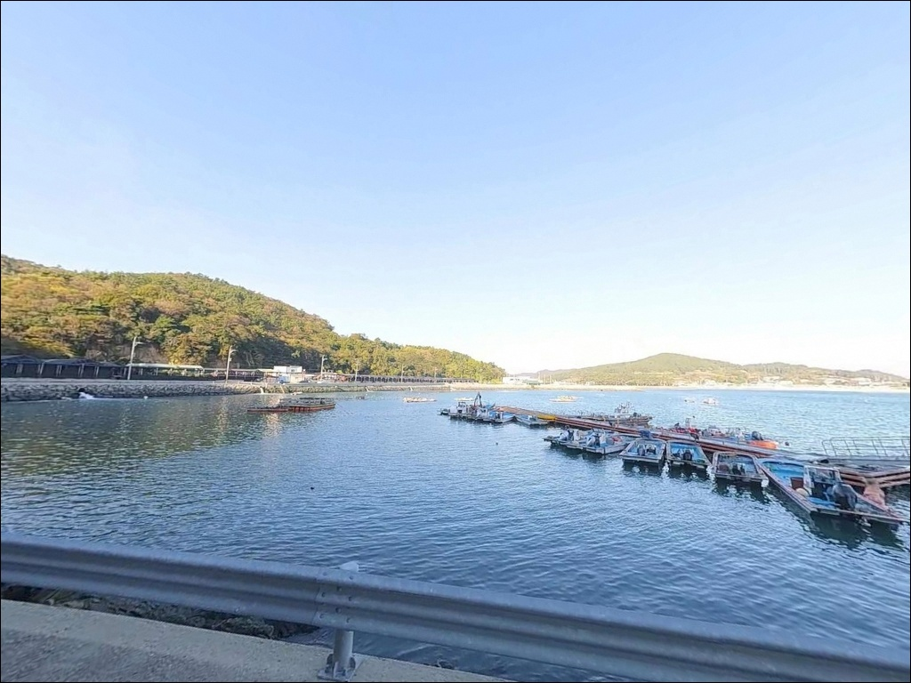
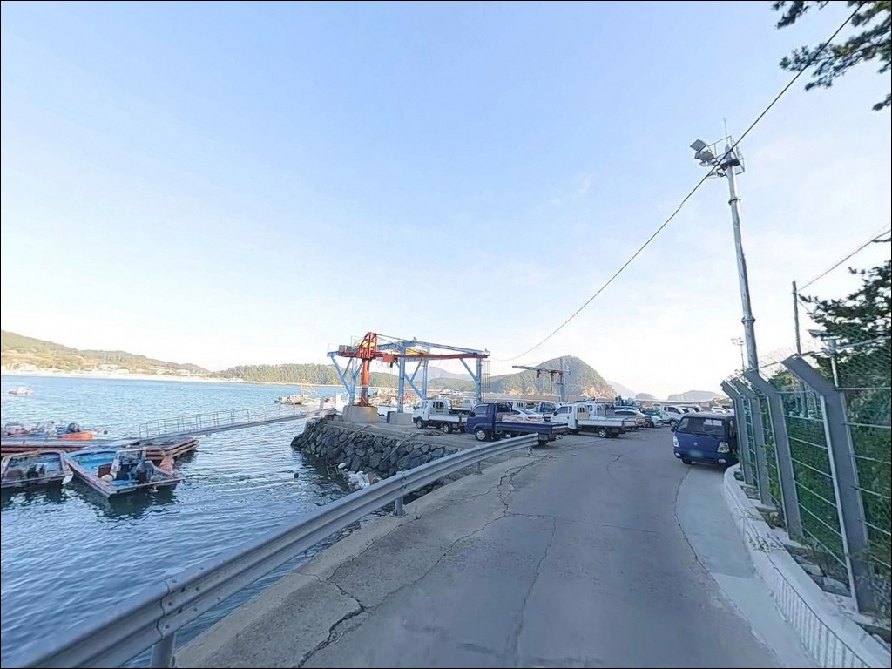
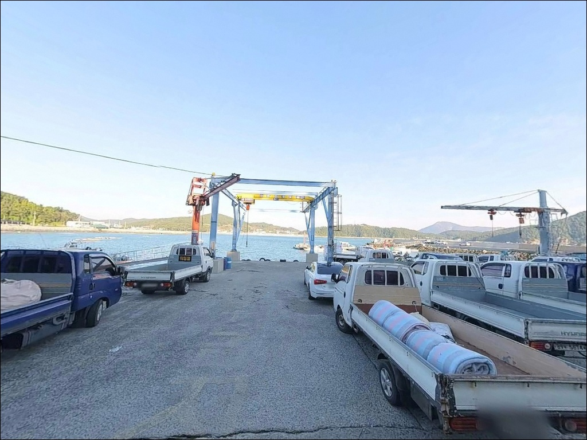
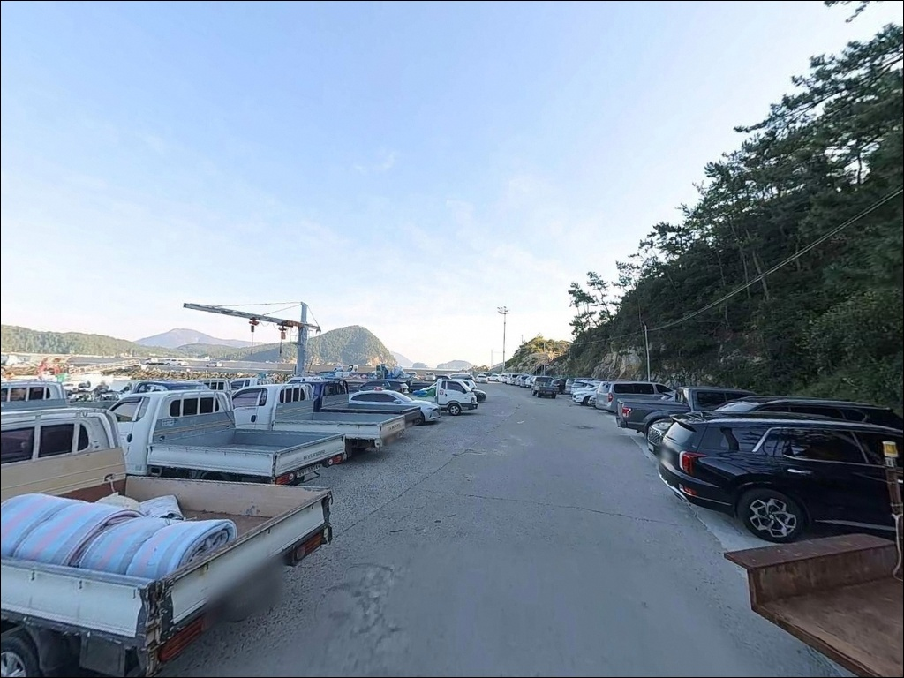
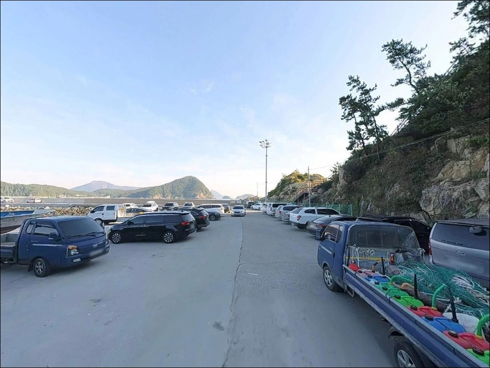
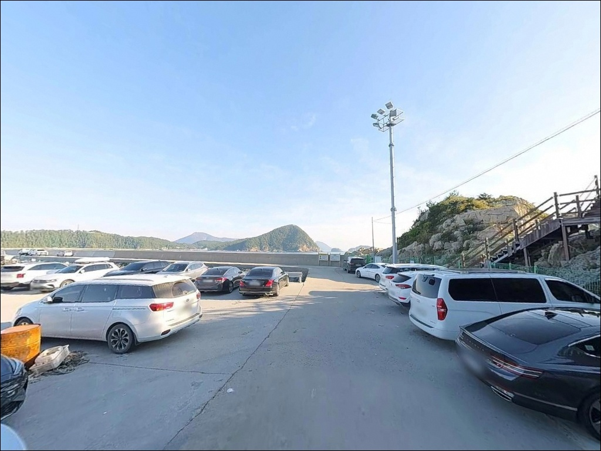
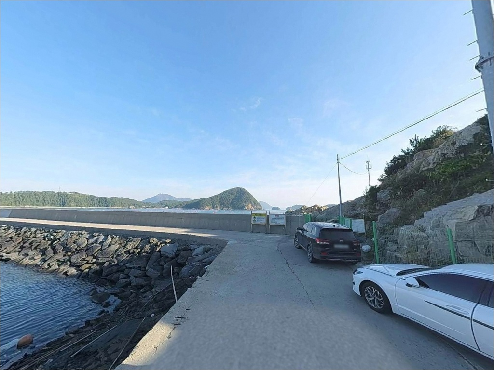
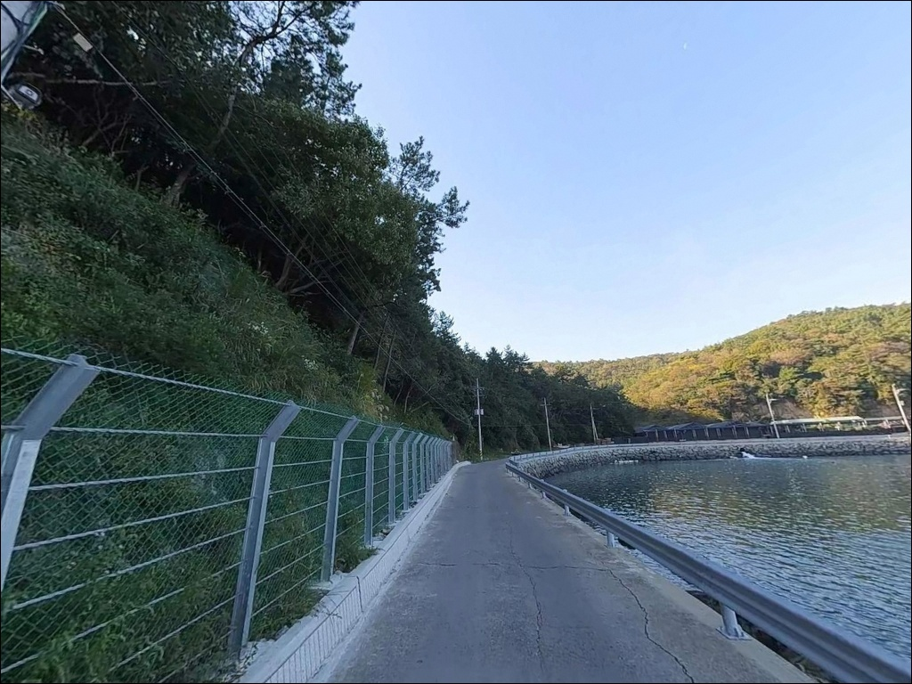

동고리방파제, 신지도 전남 완도군 숨겨진 비경을 간직한 바다 차박 낚시터 스팟
이 페이지에는 광고(제휴 링크 포함)가 있으며, 광고 링크를 통해 구매하면 운영자가 판매 수익 또는 수수료를 받을 수 있습니다. 포인트 사진: 카카오맵 스카이뷰·로드뷰. 이 페이지의 지도·사진 이미지는 카카오맵의 실제 서비스 이미지와 다를 수 있습니다.


포인트 안내
동고리방파제
전남 완도군 신지면 동고리 746-9
방파제 길이가 30~40m 수준이라
처음 보면 자리 잡기가 단순해 보입니다.
그런데 막상 끝단에 서면
외항 방향 수심이 6~10m까지 떨어지고,
고금도 방향 수로에서 흘러오는
조류가 끝단에 집중되는 구조임을
확인하게 됩니다.
이 사실을 모르고 내항 방향에만
채비를 던지면 이 포인트의
핵심 자리를 비우고 낚시하는 셈입니다.
신지대교로 완도읍과 연결된 신지도 동쪽,
동고 송림과 해수욕장을 곁에 두고
찌낚시·원투·에깅 복수 운용이 가능한
방파제 포인트입니다.
이 글은
동고리방파제의 진입 환경,
지형 기반 낚시 여건,
낚시 스타일별 자리 선택 기준,
차박 체류 조건에 집중합니다.
조황 단정이나 특정 어종 보장은
이 글의 범위에 포함되지 않습니다.

1. 신지대교에서 동고리까지,
진입 동선과 차량 여건
신지도는 완도읍에서 신지대교로 연결된 섬입니다.
대교 통행 후 섬 안쪽 도로를 따라
동쪽 방향으로 약 15km를 이동하면
동고리 마을에 도달합니다.
전 구간이 아스팔트 포장 도로로 이어져
일반 승용차부터 중형 SUV까지
진입에 큰 불편이 없는 편입니다.
방파제 입구에는 회차 공간과 주차장이
마련되어 있어 되돌아 나오는 데
어려움이 없는 구조입니다.
주차 공간은 넉넉한 편이며,
낚시 접근성을 기준으로 하면
방파제 입구 공터가 가장 가까운 자리입니다.
동고리해수욕장 쪽 주차 공간도
방파제와 도보 이동이 가능한 거리에 있습니다.
마을 안쪽 마지막 구간은
폭이 좁아지는 구간이 일부 포함됩니다.
대형 캠핑 차량이나 장축 차량이라면
출발 전 위성지도로 마을 진입로 구간을
미리 확인해 두는 편이 안전합니다.

2. 동고 송림 옆 방파제,
차박 환경과 야간 체류 여건
동고리방파제 인근에는 수백 년 된 해송 숲인
동고 송림이 분포합니다.
이 송림은 동풍 방향 바람을
일정 부분 막아주는 역할을 하며,
야간 차박 시 방풍과 프라이버시 여건이
자연스럽게 갖춰지는 환경입니다.
인접 캠핑장 입구에 화장실과 샤워장이 있어
낚시 후 하룻밤 머무는 데
기본 여건은 갖춰진 편입니다.
민가 밀집도가 낮아 야간 시간대가 조용하며,
차량 통행도 드물어 숙면 환경은 나쁘지 않습니다.
방파제 끝단 방향은 가로등이 없으므로
개인 랜턴 지참은 필수입니다.
외항이 동쪽으로 열려 있는 구조라
동풍·북동풍이 강한 날에는
파도와 바람이 방파제 끝단에 직접 닿습니다.
기상 예보 확인 없이 야간 체류를 시작하면
갑작스러운 바람 변화로
불편한 밤이 될 수 있습니다.
해수욕장 비시즌에는 캠핑장 시설
이용 가능 여부를 현장에서 확인해야 합니다.


3. 편의시설 및 인근 인프라 현황
동고리방파제에 인접한 캠핑장 입구에
화장실과 샤워장이 있습니다.
마을 안에 소규모 슈퍼가 위치하며,
인근에 펜션 단지가 형성되어 있습니다.
편의점·주유소는 동고리 마을 내에 없습니다.
신지면 중심부 방향으로 이동하면
식당과 소형 마트 이용이 가능한 편입니다.
완도읍까지는 신지대교 경유
약 10~15분 거리에
대형 마트와 낚시점, 병원이 있습니다.
출발 전 식수·얼음·낚시 소품은
완도읍 또는 신지면 중심부에서
미리 준비해 진입하는 편이 현실적입니다.
동고리 마을 내에 보건진료소가 위치하며,
중증 응급 상황이라면 신지대교를 경유해
완도읍 병원까지 약 15분이 소요됩니다.
비상약품과 연료는 출발 전에
갖추고 진입하는 것이 기본입니다.

4. 동고리방파제 방문 전
반드시 챙겨야 할 준비사항
출발 전 가장 먼저 확인할 것은
기상과 물때입니다.
외항이 동쪽으로 노출된 구조라
북동풍·동풍이 예보된 날은
방파제 끝단 파도가 강해져
낚시 자체가 어려워집니다.
기상청 해상 예보와 바다타임 물때를
당일 아침 다시 한번 확인하는 것이
이 포인트 방문의 기본 준비입니다.
외항 테트라포드 구간에서
찌낚시나 루어를 운용할 계획이라면
갯바위 전용 스파이크화 착용이 필요합니다.
이끼가 낀 테트라포드 위는
미끄럼 사고 위험이 크고,
구명조끼는 어떤 상황에서도
착용 해제 없이 유지해야 합니다.
마을 선착장 구조상 어선 이동 동선이
방파제 주변에 이어집니다.
어선 운항을 방해하지 않는 자리를
먼저 확인하고 낚시 위치를 잡는 것이
기본 매너이며,
소형 방파제에는 쓰레기통이 없으므로
쓰레기봉투를 반드시 지참해야 합니다.

5. 끝단 수심 6~10m,
동고리방파제 지형 기반 낚시 여건 분석
동고리방파제는 전체 길이 30~40m의
소형 방파제입니다.
짧은 구조지만 끝단에서
수심이 6~10m까지 빠르게 깊어지는 지형으로,
조류 소통이 활발한 외항 방향에서
자리 선택이 조과를 결정하는 구조입니다.
바닥은 암반과 모래가 혼합된 저질입니다.
외항 끝단 테트라포드 구간은
암반 비율이 높고 조류 영향을 직접 받아
찌낚시 채비가 활발하게 움직이는 자리입니다.
내항 쪽은 모래 저질 비율이 높아
원투낚시 채비가 안착하기 좋은 구조입니다.
완도 신지도 동부 해역은
전복·광어 양식장이 산재한 해역입니다.
이러한 환경은 주변 해역의 먹이 밀도를 높여
감성돔·농어 같은 회유 어종이
인근 방파제 끝단을 지나는
길목 여건이 자연스럽게 형성됩니다.
최신 조황은 출조 전
신지면 낚시 조황으로 검색해 확인하시기 바랍니다.


6. 이 방파제에 어울리는
낚시 스타일 선택 기준
끝단 수심과 조류 흐름을
가장 잘 활용하는 방식은 릴찌낚시입니다.
고금도 방향으로 흐르는 조류를 태워
채비를 흘리면 끝단 외항 구간이
주요 입질 자리가 됩니다.
이 일대 해역에서 기대해 볼 수 있는 어종으로는
감성돔·벵에돔·볼락이 있습니다.
원투낚시는 내항 모래 방향을 기준으로 운용합니다.
펄·모래 혼합 저질 바닥에서
도다리·붕장어·우럭을 기대할 수 있는 방식으로,
조류가 느려지는 정조 타이밍에
채비를 멀리 보내
바닥을 탐색하는 운용이 유효합니다.
야간 원투에서 붕장어 입질이
활발하게 들어오는 편입니다.
에깅도 함께 운용해 볼 수 있는 스타일입니다.
신지도 동부 해역은 완도권 갑오징어 서식 범위에 포함되며,
방파제 주변 갯바위 인근 해초대는
에기 채비가 닿기 좋은 구조입니다.
가을에서 초겨울로 넘어가는 시즌에
갑오징어 반응이 살아나는 경향이 있습니다.

7. 여건이 맞지 않을 때,
대안 포인트와 플랜 B 동선
동고리방파제 주차가 여의치 않거나
바람 방향이 불리할 때
가장 먼저 이동할 대안은
약 1.3km 거리의
동고항 방파제입니다.
외항 구조가 뚜렷하여
루어낚시와 찌낚시를 병행하기 좋은
인근 포인트입니다.
약 1.4km 거리의 방죽포항 선착장도
대안으로 활용할 수 있습니다.
항내 낚시가 가능한 구조로
파도나 바람 영향이 적은 편이라
선착장 기준 원투낚시에 적합합니다.
신지도 내에서 더 큰 규모의 포인트를
원한다면 신지대교 방향으로 이동해
완도읍 방파제 일대를 탐색하는 동선이 있습니다.
낚시 정보가 많이 쌓인 권역으로
감성돔 찌낚시 조황이 꾸준히 확인됩니다.
동고리방파제를 처음 찾는다면
완도읍 방파제를 기점으로 잡고
동고리를 병행 탐색하는 동선이
이 권역에서 효율적인 이동 방식입니다.

수심과 조류를 알고 들어가면
동고리방파제가 달라 보입니다
릴찌낚시로 끝단 조류를 공략하거나
야간 원투로 붕장어를 기다리는 낚시인이라면
동고리방파제의 지형 조건이
잘 맞는 구조입니다.
30~40m 길이의 소형 방파제지만
끝단 수심 6~10m와
고금도 수로에서 흘러오는 조류가
이 포인트를 밀도 있게 만들어 줍니다.
아직 온라인 낚시 정보가 많지 않은 포인트라
동고리방파제 전용 조황보다는
신지면 일대 조황 검색으로
방문 시기를 가늠하는 편이 현실적입니다.
출조 전 조황 검색과 물때 확인,
동풍·북동풍 기상 점검,
이 세 가지를 갖추고 가면
소형 방파제가 기억에 남는 포인트로 바뀝니다.
동고 송림 옆 조용한 어촌 마을에서
캠핑장 시설을 활용해 하룻밤 머무는
낚시 차박 여행자라면,
완도 신지도 동쪽 끝 이 방파제가
조용하고 부담 없는
출발지가 될 수 있는 곳입니다.